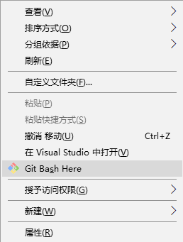
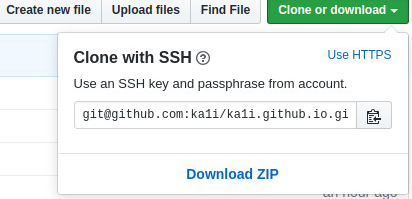
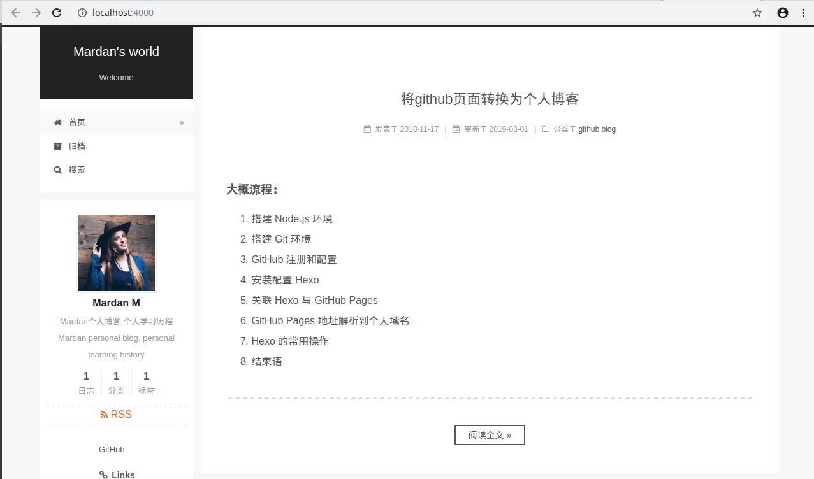

大概流程：
- 搭建 Node.js 环境
- 搭建 Git 环境
- GitHub 注册和配置
- 安装配置 Hexo
- 关联 Hexo 与 GitHub Pages
- GitHub Pages 地址解析到个人域名
- Hexo 的常用操作
- 结束语
先决条件
安装Node.js,Git
确认安装是否成功:
- Node：
1
2node -v
npm -v - Git:我的版本:
1
git --version
1 | $ node -v |
出现版本号，说明安装成功。
下载后需要注册Github账号,并创建新的存储库(yourname.github.io),yourname是你的github用户名
访问你的Github主页:<yourname>.github.io,正常访问，说明成功。
你可以使用淘宝NPM定制的 cnpm (gzip 压缩支持) 命令行工具代替默认的 npm:
1 | npm install -g cnpm --registry=https://registry.npm.taobao.org |
然后一切准备就绪后,安装hexo框架
1 | cnpm install -g hexo-cli |
查看hexo版本
1 | hexo version |
输出版本，说明成功。
1 | $ hexo version |
可以看到在
选择放置博客本地管理的位置，进入那个目录后，右击打开 Git Bash Here选项

1 | hexo init <你的github主站域名，like this: hexo init <username>.github.io> |
生成的目录大概是这样的：
1 | . |
生成SSH key以让hexo访问github,
1 | ssh-keygen -t rsa -b 4096 -C "your_email@qq.com" |
打开文件C:\Users\bxm09.ssh\id_rsa.pub，并复制文件里面的内容
进入https://github.com/settings/ssh,选择 new ssh key,粘贴刚刚复制的文件C:\Users\bxm09.ssh\id_rsa.pub全部内容。测试:
1 | ssh -T git@github.com |
输出:
1 | The authenticity of host ‘github.com (207.97.227.239)’ can’t be established. |
然后输入yes。
输出:
1 | Hi <your_username>! You've successfully authenticated, but GitHub does not provide shell access. |
开始关联hexo和GitHub
1 | git config --global user.name "your_username" |
修改git的remote url
1 | $ git remote -v |
如果是以上的结果那么说明此项目是使用https协议进行访问的（如果地址是git开头则表示是git协议）

复制此ssh链接，然后使用命令 git remote set-url 来调整你的url
1 | git remote set-url origin git@github.com:xxxxxxxx |
然后你可以再用命令 git remote -v 查看一下，url是否已经变成了ssh地址。
然后你就可以愉快的使用git fetch, git pull , git push，再也不用输入烦人的密码了
Hexo命令
网络上有很多部署到git的教程，自行参考。执行命令hexo generate后会在目录下生产public文件夹，该文件夹是hexo生产的静态文件。可以部署发布到自己建的web服务器。以下列一些常用命令：
hexo new "postName" #新建文章
hexo new page "pageName" #新建页面
hexo generate #生成静态页面至public目录
hexo server #开启预览访问端口（默认端口4000，'ctrl + c'关闭server）
hexo deploy #将.deploy目录部署到GitHub
hexo help #查看帮助
hexo version #查看Hexo的版本
以下是命令的简写：
hexo n == hexo new
hexo g == hexo generate
hexo s == hexo server
hexo d == hexo deploy
生成，部署也可以这样写：
hexo d -g
启动hexo本地服务(!!!若遇到问题，下面有常见问题解决方案)
1 | hexo server |
你的网站会在http://localhost:4000/上启动
成功启动后。
打开博客全局配置文件站点配置文件 _config.yml。
找到Deployment字段，(!!!每个冒号后都有一个空格)
1 | ## Docs: https://hexo.io/docs/deployment.html |
删除旧的 public 文件
1 | hexo clean |
生成新的 public 文件
1 | hexo generate |
开始部署
1 | hexo deploye |
浏览器打开你的https://<your_username>.github.io
安装Next主题
1 | cd <your_username>.github.io |
启用 NexT 主题
打开博客站点配置文件 _config.yml。找到 theme 字段，并将其值更改为 next。
1 | theme: next |
验证主题
首先启动 Hexo 本地站点，并开启调试模式（即加上 –debug），整个命令是 hexo s –debug。 在服务启动的过程，注意观察命令行输出是否有任何异常信息，如果你碰到问题，这些信息将帮助他人更好的定位错误。 当命令行输出中提示出：
1 | INFO Hexo is running at http://0.0.0.0:4000/. Press Ctrl+C to stop. |
此时即可使用浏览器访问 http://localhost:4000，检查站点是否正确运行。

现在，你已经成功安装并启用了 NexT 主题。下一步我们将要更改一些主题的设定，包括个性化以及集成第三方服务。
绑定自己的域名
在 GitHub 仓库的根目录下建立一个 CNAME 的文本文件(注意：没有扩展名)，文件里面只能输入一个你的域名，不能加http://
1 | 你申请的域名地址 |
Frist:
记录类型选择CNAME
主机记录填@
解析线路选择默认
记录值填www.# eg: www.mardan.wiki
TTL值为10分钟
Second:
记录类型选择CNAME
主机记录填www
解析线路选择默认
记录值填<yourname>.github.io
TTL值为10分钟
点击保存，等 1 分钟，访问下你自己的域名，一切就ok了。
域名绑定成功，域名解析成功，因此你在浏览中输入你的域名
注意：CNAME文件在下次 hexo deploy的时候就消失了，需要重新创建，这样就很繁琐
1 | skip_render: |
如果在博客文章列表中，不想全文显示，可以增加 <!-- more -->, 后面的内容就不会显示在列表。
主题优化
常见问题解决方案
如果:hexo deploye,报not found:git
1 | cnpm install hexo-deployer-git --save |
------ article has ended,thank you for reading ------